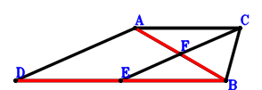
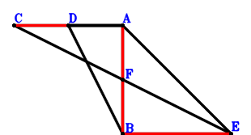

Exercise 1： Let ADBC be a trapezoid with DB//AC and DB=2AC. F is the midpoint of EC. AB=AC. Given that D, E, B are collinear and A, F, B are collinear, prove that DE\(\cdot\)EB=4\(\cdot\)AF\(\cdot\)FB.

\(\because \) DB//AC and DB=2AC \(\therefore \small\overrightarrow{BD}=2 \small\overrightarrow{BA} - 2 \small\overrightarrow{BC}\).\(\because \) F is the midpoint of EC \(\therefore \small\overrightarrow{BF}=\dfrac{\small\overrightarrow{BC}}{2} + \dfrac{\small\overrightarrow{BE}}{2}\).\(\because \) AB=AC \( \therefore\small\overrightarrow{BA}^{2} - \small\overrightarrow{CA}^{2}=\small\overrightarrow{BA}^{2} - \left(\small\overrightarrow{BA} - \small\overrightarrow{BC}\right)^{2}=2 \small\overrightarrow{BA} \cdot \small\overrightarrow{BC} - \small\overrightarrow{BC}^{2}=0.\)In conclusion, \(4 \small\overrightarrow{AF} \cdot \small\overrightarrow{BF} + \small\overrightarrow{DE} \cdot \small\overrightarrow{EB}=- \small\overrightarrow{BE} \cdot \left(- \small\overrightarrow{BD} + \small\overrightarrow{BE}\right) + 4 \small\overrightarrow{BF} \cdot \left(- \small\overrightarrow{BA} + \small\overrightarrow{BF}\right)=- \small\overrightarrow{BE} \cdot \left(- 2 \small\overrightarrow{BA} + 2 \small\overrightarrow{BC} + \small\overrightarrow{BE}\right) + 4 \left(\dfrac{\small\overrightarrow{BC}}{2} + \dfrac{\small\overrightarrow{BE}}{2}\right) \cdot \left(- \small\overrightarrow{BA} + \dfrac{\small\overrightarrow{BC}}{2} + \dfrac{\small\overrightarrow{BE}}{2}\right)=- 2 \small\overrightarrow{BA} \cdot \small\overrightarrow{BC} + \small\overrightarrow{BC}^{2}=0\)\(\because\) D, E, B are collinear and A, F, B are collinear \(\therefore\) DE\(\cdot\)EB=4\(\cdot\)AF\(\cdot\)FB.
Exercise 3： Let DBEA be a trapezoid with BE//DA and BE=2DA. F is the midpoint of CE. AB=CA. Given that A, F, B are collinear and CD//BE, prove that \(BE·CD=2·AF·FB\).

\(\because \) BE//DA and BE=2DA \(\therefore \small\overrightarrow{BD}=\small\overrightarrow{BA} - \dfrac{\small\overrightarrow{BE}}{2}\).\(\because \) F is the midpoint of CE \(\therefore \small\overrightarrow{BF}=\dfrac{\small\overrightarrow{BC}}{2} + \dfrac{\small\overrightarrow{BE}}{2}\).\(\because \) AB=CA \( \therefore\small\overrightarrow{BA}^{2} - \small\overrightarrow{CA}^{2}=\small\overrightarrow{BA}^{2} - \left(\small\overrightarrow{BA} - \small\overrightarrow{BC}\right)^{2}=2 \small\overrightarrow{BA} \cdot \small\overrightarrow{BC} - \small\overrightarrow{BC}^{2}=0.\)In conclusion, \(2 \small\overrightarrow{AF} \cdot \small\overrightarrow{BF} + \small\overrightarrow{DC} \cdot \small\overrightarrow{EB}=- \small\overrightarrow{BE} \cdot \left(\small\overrightarrow{BC} - \small\overrightarrow{BD}\right) + 2 \small\overrightarrow{BF} \cdot \left(- \small\overrightarrow{BA} + \small\overrightarrow{BF}\right)=- \small\overrightarrow{BE} \cdot \left(- \small\overrightarrow{BA} + \small\overrightarrow{BC} + \dfrac{\small\overrightarrow{BE}}{2}\right) + 2 \left(\dfrac{\small\overrightarrow{BC}}{2} + \dfrac{\small\overrightarrow{BE}}{2}\right) \cdot \left(- \small\overrightarrow{BA} + \dfrac{\small\overrightarrow{BC}}{2} + \dfrac{\small\overrightarrow{BE}}{2}\right)=- \small\overrightarrow{BA} \cdot \small\overrightarrow{BC} + \dfrac{\small\overrightarrow{BC}^{2}}{2}=0\)\(\because\) A, F, B are collinear and CD//BE \(\therefore\) \(BE·CD=2·AF·FB\).
Exercise 12： Let AEFC be a trapezoid with EF//AC and EF=2AC. D is the midpoint of EC. A, D, B are collinear and \(AB^{2}=4 AD \cdot DB\). Given that E, B, F are collinear, prove that \(AC^{2}=BF \cdot EB\).